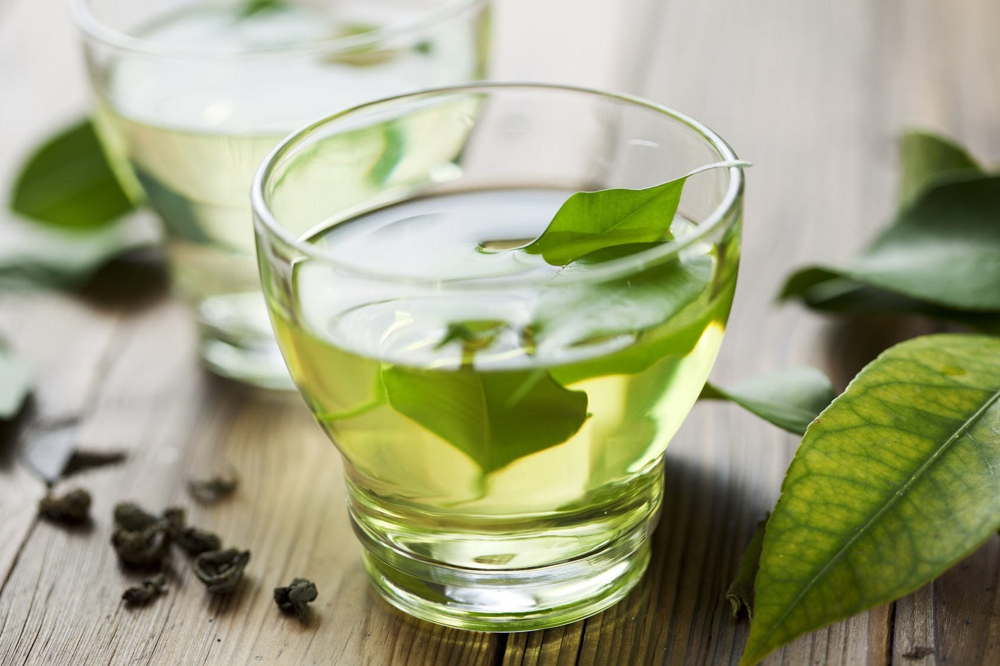
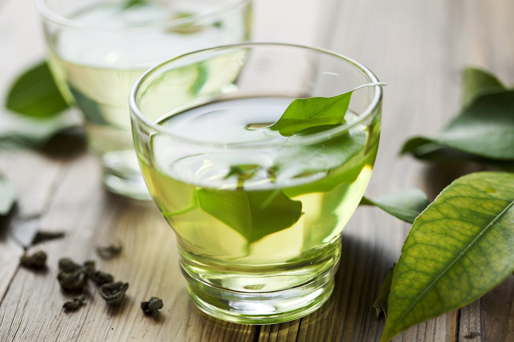

Tea as we know it is prepared by pouring hot water over the leaves of this plant. Oolong tea also comes from that very same plant (more on oolong tea further below).
A tea can really only be classified as a tea when the leaves are from the Camellia sinensis plant. Other teas, such as herbal teas,
are therefore not considered real teas because they are made from different plants and herbs.
The differences between white tea, green tea and black tea are mainly determined by the level of oxidation that takes place during the processing of the tea leaves. Oxidation in this context means that the leaves are processed such that enzymes trigger the natural oxidation process. Oxidation of tea greatly impacts the appearance, flavor and chemical composition of the leaves. It turns tea leaves brown or black, and increases caffeine levels in the final tea product. It also enhances flavor. But the trade-off is that a heavily oxidized tea contains less antioxidants. All fruits and plants oxidize. A banana, for example, starts green and slowly turns yellow and finally brown as time progresses. With the change of color, the taste also changes drastically. Tea leaves start green and slowly turn brown, or even black, due to oxidation.
 


| White Tea | Green Tea | Black Tea |
|---|---|---|
| Key Feature | ||
| White tea is not (or hardly) oxidized which means it is able to retain most of its natural antioxidants. | Popular in both Japan and China, green tea is slightly more processed and oxidized than white tea. | The most popular tea in the western world is black tea. It is called black because it is fully oxidized creating that dark color |
| Taste | ||
| White tea typically has a very mild, sweet and somewhat flowery taste. | Green tea often has a somewhat grassy, or earthy, taste. | Black teas are often flavored with added fruits, natural essences or spices, such as ginger and cinnamon. |
| Price | ||
| LKR 1000 - LKR 1500 | LKR 1000 - LKR 1500 | LKR 1000 - LKR 1500 |